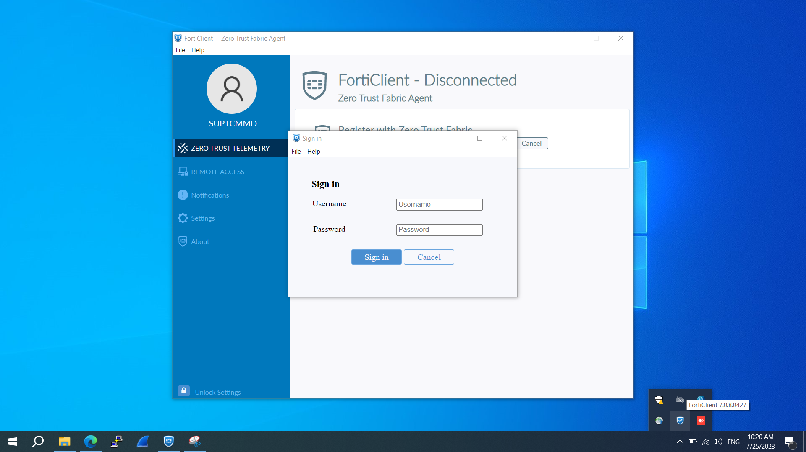
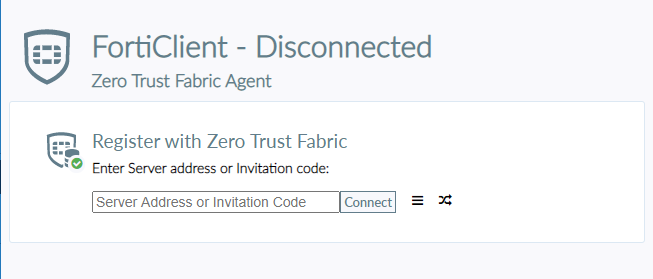

กลับไปขั้นตอนเริ่มใช้งาน
ตั้งค่า FortiClient บน Windows
เตรียม Username / Password และ Invitation Code
ก่อนเริ่ม: Username / Password ชุดนี้ใช้สำหรับติดตั้งครั้งแรก
เปิด FortiClient และลงชื่อเข้าใช้
เมื่อ FortiClient เปิด ให้กรอก Username และ Password ที่ได้รับ แล้วกด Sign in

หน้าลงชื่อเข้าใช้ FortiClient หลังติดตั้ง · เลือกภาพเพื่อขยาย ถ้า FortiClient ไม่เปิดอัตโนมัติ
ดับเบิลคลิกไอคอน FortiClient มุมขวาล่าง แล้วใส่ Invitation Code ในช่อง Enter Server address or Invitation Code แล้วกด Connect แล้ว Sign in

ช่องกรอก Server address หรือ Invitation Code · เลือกภาพเพื่อขยาย ตรวจสอบสถานะและชื่อผู้ใช้งาน
ในหน้า ZERO TRUST TELEMETRY สถานะต้องเป็น Connected ชื่อผู้ใช้ต้องตรงกับ Username

ตัวอย่างสถานะ Connected หลังตั้งค่าเรียบร้อย · เลือกภาพเพื่อขยาย จากนั้นเชื่อมต่อ VPN